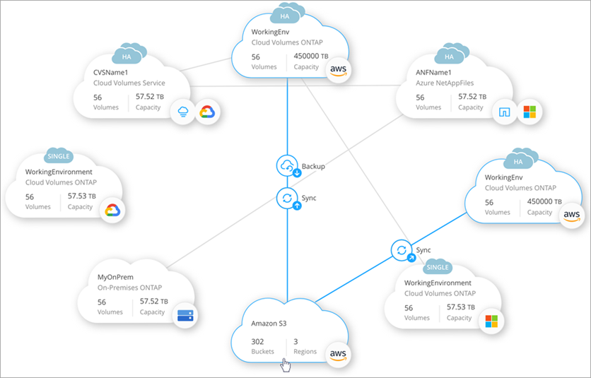
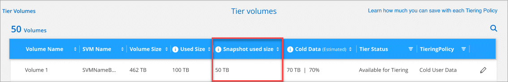

Cloud Manager 3.9 の新機能
通常、 Cloud Manager では毎月新しいリリースが導入され、新機能、拡張機能、およびバグ修正が提供されます。
|
以前のリリースをお探しですか？"3.8 の新機能" "3.7 の新機能" |
Cloud Manager 3.9.7 （ 2021 年 5 月 30 日）
Cloud Volumes ONTAP の機能拡張
このリリースの Cloud Manager では、 Cloud Volumes ONTAP の管理が強化されています。
AWS で利用できる機能拡張
-
新しいプロフェッショナルパッケージでは、 AWS Marketplace で毎年契約を締結し、 Cloud Volumes ONTAP と Cloud Backup Service をバンドルできます。支払いは TiB あたりです。このサブスクリプションでは、オンプレミスのデータをバックアップすることはできません。
この支払いオプションを選択すると、 EBS ディスクを介して Cloud Volumes ONTAP システムあたり最大 2PB をプロビジョニングし、 S3 オブジェクトストレージ（シングルノードまたは HA ）に階層化することができます。
にアクセスします "AWS Marketplace のページ" 価格の詳細を表示するには、を参照してください "Cloud Volumes ONTAP リリースノート" このライセンスオプションの詳細については、を参照してください。
-
新しい Cloud Volumes ONTAP 作業環境の作成時に、 Cloud Manager によって EBS ボリュームにタグが追加されるようになりました。タグは、 Cloud Volumes ONTAP の導入後に作成されたものです。
この変更は、サービス制御ポリシー（ SCP ）を使用して権限を管理する場合に役立ちます。
すべてのクラウドプロバイダで利用できる機能拡張
-
auto 階層化ポリシーを使用してボリュームのデータ階層化を有効にした場合、 API を使用して最小クーリング期間を調整できるようになりました。
-
新しい NFS ボリュームを作成すると、カスタムのエクスポートポリシーが昇順に表示されるようになり、必要なエクスポートポリシーが簡単に見つかります。
-
Cloud Volumes ONTAP システムの導入時および電源をオフにするたびに作成されたルートディスクとブートディスクの古いクラウド Snapshot が Cloud Manager で削除されるようになりました。ルートボリュームとブートボリュームの両方に対して最新の 2 つの Snapshot のみが保持されます。
この機能拡張により、不要になった Snapshot を削除することでクラウドプロバイダのコストを削減できます。
Azure スナップショットを削除するには、 Connector で新しい権限が必要になることに注意してください。 "Azure の最新の Cloud Manager ポリシーを表示します"。
"Microsoft.Compute/snapshots/delete"
デジタルウォレット
デジタルウォレット * の新機能により、 Cloud Volumes ONTAP ライセンスとクラウドバックアップライセンスを 1 箇所から簡単に表示および管理できます。

Cloud Manager 3.9.6 の更新（ 2021 年 24 月 5 日）
Cloud Manager が更新され、 Cloud Volumes ONTAP の最新バージョンが追加されました。
Cloud Volumes ONTAP 9.9.1
Cloud Volumes ONTAP 9.9.9..1. を導入および管理できるようになりました。
Cloud Manager 3.9.6 ビルド 2 （ 2021 年 5 月 11 日）
Azure で Cloud Volumes ONTAP の作業環境を作成する際にエラーが発生するというバグが修正されました。
Cloud Manager 3.9.6 の更新（ 2021 年 5 月 5 日）
Cloud Backup の機能拡張
-
[ バックアップと復元 ] ダッシュボードは、新しい [ バックアップと復元 *] タブに統合されているため、すべてのバックアップ操作と復元操作を 1 か所から簡単に管理できます。を参照してください "バックアップと復元のダッシュボード" を参照してください。
-
オンプレミスの ONTAP システムから Google Cloud Storage や NetApp StorageGRID システムへのバックアップを作成できるようになりました。を参照してください "Google Cloud Storage へのバックアップ" および "StorageGRID にバックアップしています" を参照してください。
-
ONTAP 9.9.1 の新機能では、 System Manager を使用して、オンプレミスの ONTAP のバックアップを Cloud Backup で設定したオブジェクトストレージに送信できます。 "Cloud Backup を使用してボリュームをクラウドにバックアップする方法については、 System Manager の説明を参照してください。"
-
バックアップポリシーが次のように強化されています。
-
次に、日単位、週単位、月単位のバックアップを組み合わせたカスタムポリシーを作成します。
-
バックアップポリシーを変更すると、元のバックアップポリシーを使用してすべてのボリュームに環境のすべての新しいバックアップ * および * が変更されます。これまでは、新しいボリュームバックアップにのみ適用されていました。
-
-
いくつかの改善点も改善されています。
-
バックアップファイルのクラウドのデスティネーションを設定する際に、 Cloud Volumes ONTAP システムが配置されているリージョンとは異なるリージョンを選択できるようになりました。
-
単一のボリュームに作成できるバックアップファイルの数が 1 、 019 から 4 、 000 に増えました。
-
1 つのボリュームのすべてのバックアップファイルを先に削除できるようになったほか、ボリュームのバックアップファイルを 1 つだけ削除したり、作業環境全体のバックアップファイルを必要に応じてすべて削除したりできるようになりました。
-
監視機能の拡張
-
既存の Cloud Insights テナントがある場合でも、 Cloud Volumes ONTAP 作業環境で監視サービスを有効にできるようになりました。
-
監視サービスを有効にすると、 Cloud Manager は Cloud Insights の無償トライアルをセットアップします。29 日目に、計画は自動的に試用版からに移行します "Basic エディション"。
レプリケーションの機能拡張
使いやすく、 Cloud Manager のユーザインターフェイスの最新のルックアンドフィールに合わせて、 Replication タブが再設計されました。

アカウントの強化
Cloud Manager のタイムラインに、アカウント管理に関連する操作とイベントが表示されるようになりました。アクションには、ユーザーの関連付け、ワークスペースの作成、コネクタの作成などがあります。タイムラインのチェックは、特定のアクションを実行したユーザーを特定する必要がある場合や、アクションのステータスを特定する必要がある場合に役立ちます。
Cloud Compliance の機能拡張
-
クラウドコンプライアンスは「ガバナンスとコンプライアンス」に名称変更されました。Cloud Manager には、「ガバナンス」と「コンプライアンス」という 2 つのタブがあります。[Governance （ガバナンス） ] タブをクリックすると、が表示されます "ガバナンスダッシュボード" 「ガバナンスとコンプライアンス」サービスと「コンプライアンス」タブでは、が表示されます "コンプライアンスダッシュボード"。
-
Azure Blob に格納されたデータのスキャンがサポートされるようになりました を使用する場合 "MinIO サービス"。を参照してください "S3 プロトコルを使用するオブジェクトストレージをスキャンしています" を参照してください。
-
新しい個人データ型。Cloud Compliance で、オーストリアの SSN をファイルで検索できるようになりました。
Cloud Manager 3.9.6 （ 2021 年 5 月 2 日）
Cloud Tiering の機能拡張
-
ONTAP システムから階層化するボリュームを選択するときに、 [Tier Volumes] ページに [*All *VOLUMES ] チェックボックスが表示され、すべてのボリュームに同じポリシーを簡単に適用できるようになりました。 "クラスタ内のすべてのボリュームの選択方法を参照してください"。
-
ONTAP 9.8 以降を使用している場合、ボリューム内のデータを非アクティブのままオブジェクトストレージに移動する期間を決定する「クーリング期間」を変更する必要がある場合は、最大 183 日（ 63 日以内）まで指定できるようになりました。
アプリケーションテンプレートの機能拡張
-
AppTemplates サービスでユーザーインターフェイスが強化され、テンプレートデザイナーがアクション間を移動したり、現在定義しているアクションを確認したりするのが容易になりました。
-
Cloud Volumes ONTAP または Azure NetApp Files のボリュームテンプレートを作成する際に、 Cloud Compliance を統合できるようになりました。これにより、新しく作成した各ボリュームに対して Compliance を有効にしたり、新しく作成した各ボリュームに対して Cloud Backup を有効にしたりできます。また、作成したボリュームに対して Backup と Compliance の両方を有効にするテンプレートを作成することもできます。
Cloud Sync の機能拡張
-
レポートで見つかったエラーを表示し、最後のレポートまたはすべてのレポートを削除できるようになりました。
-
同期関係ごとに新しい * Compare by * 設定を使用できるようになりました。
この詳細設定では、ファイルまたはディレクトリが変更されたために再度同期する必要があるかどうかを判断するときに、 Cloud Sync で特定の属性を比較するかどうかを選択できます。
Cloud Manager 3.9.5 （ 2021 年 4 月 11 日）
Cloud Volumes ONTAP の機能拡張
このリリースの Cloud Manager では、 Cloud Volumes ONTAP の管理が強化されています。
すべてのクラウドプロバイダで利用できる機能強化
Cloud Manager で、 Cloud Volumes ONTAP 用に作成した最初の Storage VM の論理スペースのレポートを有効にするようになりました。
スペースが論理的に報告されると、 ONTAP は、 Storage Efficiency 機能で削減されたすべての物理スペースが使用済みと報告するようにボリュームスペースを報告します。
AWS で利用できる機能拡張
-
Cloud Volumes ONTAP では、 9.7 リリース以降、 _General Purpose SSD （ GP3 ） _disks がサポートされるようになりました。GP3 ディスクは、幅広いワークロードのコストとパフォーマンスのバランスが取れた、最も低コストの SSD です。
-
Cloud Volumes ONTAP はコールド HDD （ sc1 ）ディスクをサポートしなくなりました。
Azure で利用できる機能拡張
Cloud Manager が Azure for Cloud Volumes ONTAP でストレージアカウントを作成する際に、ストレージアカウントの TLS のバージョンが 1.2 になりました。
Cloud Sync の機能拡張
-
スタンドアロンの Cloud Sync サービスは廃止されました。Cloud Sync には Cloud Manager から直接アクセスできるようになりました。同じ機能がすべて利用可能です。
Cloud Manager にログインしたら、上部の Sync タブに切り替えて、以前と同様に関係を表示できます。
-
同期関係を設定する際、データブローカーのサービスアカウントに必要な権限を指定している場合は、異なるプロジェクトの Google Cloud バケットから選択できます。
-
Cloud Sync は、 Google Cloud Storage と S3 プロバイダ（ AWS S3 、 StorageGRID 、 IBM Cloud Object Storage ）間でメタデータをコピーするようになりました。
-
Cloud Sync からデータブローカーを再起動できるようになりました。

-
Cloud Sync は、データブローカーで最新のソフトウェアリリースが実行されていないことを確認できるようになりました。このメッセージは、最新の機能を確実に利用するために役立ちます。

Cloud Compliance の機能拡張
-
オンプレミスまたはクラウドにある NFS または CIFS ファイル共有のスキャンがサポートされるようになりました。
ネットアップ以外のストレージシステム上のファイル共有をスキャンできるようになりました。を参照してください "ファイル共有をスキャンしています" を参照してください。
-
S3 プロトコルを使用するオブジェクトストレージのスキャンのサポートが追加されました。
Amazon S3 バケットをスキャンするだけでなく、 S3 プロトコルを使用する任意の Object Storage サービスからデータをスキャンできるようになりました。これには、 NetApp StorageGRID 、 IBM Cloud Object Store などが含まれます。を参照してください "オブジェクトストレージをスキャンしています" を参照してください。
-
「ハイライト」という機能は、「ポリシー」に名称変更されました。を参照してください "ポリシーの使用方法" コンプライアンスとガバナンスへの取り組みを支援します。
-
ストレージシステム内に特定のファイルの重複がないかどうかを確認できるようになりました。これは、ストレージスペースを節約できる領域を特定するのに役立ちます。また、機密情報を含むファイルがストレージシステムに不必要に複製されないようにするのにも役立ちます。
方法をご確認ください "重複ファイルを検索します"。
-
。 "ガバナンスダッシュボード" に、表示するグラフが追加されました "データの機密性に基づいて上位のデータリポジトリが表示されます" および "オープンアクセス権のタイプ別に一覧表示されるデータ"。
新しいアプリケーションテンプレート機能
テンプレートを使用することで、作業環境でのリソース作成を標準化できます。たとえば、「ボリュームテンプレート」に必須パラメータをハードコーディングして、ストレージ管理者がボリュームを作成するときにあとから適用できます。これには、必要なディスクタイプ、サイズ、プロトコル、クラウドプロバイダなどが含まれます。作成したボリュームごとに、 Cloud Backup などの特定のサービスをオンにすることもできます。
これにより、ストレージ管理者は、データベースやストリーミングサービスなど、特殊なワークロード要件に合わせて最適化されたボリュームを簡単に作成できます。また、各ボリュームがアプリケーションごとに最適に作成されていることを確認すれば、ストレージアーキテクトの負担が軽減されます。詳細はこちら "アプリケーションテンプレート" また、実際の環境での使用方法も確認できます。
コネクターの拡張
プロキシサーバを設定している場合、プロキシを経由せずに Cloud Manager に API 呼び出しを直接送信するオプションを有効にできるようになりました。このオプションは、 AWS または Google Cloud で実行されているコネクタでサポートされます。
アカウントの機能拡張
-
サービスアカウントユーザを作成できるようになりました。
サービスアカウントは「ユーザ」の役割を果たし、 Cloud Manager に対して自動化のための許可された API 呼び出しを実行できます。これにより、自動化スクリプトを作成する必要がなくなります。自動化スクリプトは、会社を離れることができる実際のユーザアカウントに基づいて作成する必要がなくなります。フェデレーションを使用している場合は、クラウドから更新トークンを生成することなくトークンを作成できます。
-
アカウントのプライベートプレビューで、新しい NetApp クラウドサービスが Cloud Manager のプレビューとして利用できるようになりました。
-
また、アカウント内のサードパーティサービスが Cloud Manager で使用可能なサードパーティサービスにアクセスできるようにすることもできます。
Cloud Manager 3.9.4 の更新（ 2021 年 4 月 8 日）
Active IQ の機能拡張
-
Cloud Volumes ONTAP がアカウント内に使用していない Active IQ ライセンスを検出した場合は、ボタンをクリックして、ライセンスを使用して新しい Cloud Volumes ONTAP システムを作成できます。または、既存の Cloud Volumes ONTAP システムにライセンスを適用して、そのライセンスの容量を 368 TB 拡張できます。
を参照してください "利用可能なライセンスの使用方法"。
Cloud Manager 3.9.4 の更新（ 2021 年 3 月 15 日）
Cloud Compliance の機能拡張
-
新しい "ガバナンスダッシュボード" を使用できるようになりました。これにより、組織のストレージリソース上のデータに関連する効率性が向上し、コストを制御できます。
たとえば、ダッシュボードは、古いデータ、ビジネス以外のデータ、およびシステム内の大容量ファイルを特定するため、一部のファイルを低コストのオブジェクトストレージに移動、削除、階層化するかどうかを判断できます。
-
のリストを表示できます "ファイルへのアクセス権を持つすべてのユーザまたはグループ"。
-
AWS の政府機関では、 Cloud Compliance がサポートされるようになりました。
Cloud Manager 3.9.4 （ 2021 年 3 月 8 日）
Cloud Volumes ONTAP の機能拡張
このリリースの Cloud Manager では、 Cloud Volumes ONTAP の管理が強化されています。
すべてのクラウドプロバイダで利用できる機能強化
Cloud Volumes ONTAP 9.9.9..0 を導入および管理できるようになりました。
AWS で利用できる機能拡張
-
クラウドサービス 9.8 を AWS Commercial Cloud Volumes ONTAP （ C2S ）環境に導入できるようになりました。
-
Cloud Manager では、 AWS Key Management Service （ KMS ）を使用して Cloud Volumes ONTAP データを暗号化できるようになりました。Cloud Volumes ONTAP 9.9.9..0 以降では、お客様が管理する CMK を選択すると、 EBS ディスク上のデータと S3 に階層化されたデータが暗号化されます。これまでは、 EBS データだけが暗号化されていました。
Cloud Volumes ONTAP IAM ロールに CMK を使用するためのアクセス権を付与する必要があります。
Azure で利用できる機能拡張
Cloud Volumes ONTAP 9.8 を、国防総省（ DoD ）の影響レベル 6 （ IL6 ）に導入できるようになりました。
Google Cloud で利用可能な機能強化
-
Google Cloud で Cloud Volumes ONTAP 9.8 以降に必要な IP アドレスの数が削減されました。デフォルトでは、 IP アドレスを 1 つ減らす必要があります（インタークラスタ LIF をノード管理 LIF と統合しました）。また、 API を使用する場合は SVM 管理 LIF の作成を省略でき、追加の IP アドレスが不要になります。
-
Google Cloud で Cloud Volumes ONTAP HA ペアを導入する際に、 VPC -1 、 VPC -2 、および VPC -3 の共有 VPC を選択できるようになりました。以前は、 VPC を共有できるのは VPC のみでした。この変更は Cloud Volumes ONTAP 9.8 以降でサポートされています。
コネクタの機能拡張
-
Connector が実行されていない場合に、 Cloud Manager から管理者ユーザに E メールで通知されるようになりました。
コネクタを常時稼働させておくと、 Cloud Volumes ONTAP やその他の NetApp クラウドサービスを最大限に管理するのに役立ちます。
-
コネクタのインスタンスタイプを変更する必要がある場合に、 Cloud Manager に通知が表示されるようになりました。
インスタンスタイプを変更することで、現在利用できない新しい機能を確実に使用できます。 "マシンタイプの変更の詳細については、こちらをご覧ください"。
Cloud Sync の機能拡張
-
Cloud Sync で ONTAP S3 ストレージと SMB サーバの同期関係がサポートされるようになりました。
-
ONTAP S3 ストレージから SMB サーバへの移動
-
SMB サーバから ONTAP S3 ストレージ
-
-
Cloud Sync では、ユーザインターフェイスからデータブローカーグループの設定を直接統合できるようになりました。
自分で設定を変更することはお勧めしません。設定を変更するタイミングと変更方法については、ネットアップに相談してください。
Cloud Tiering の機能拡張
-
Google Cloud Storage に階層化する場合は、ライフサイクルルールを適用して、階層化されたデータを Standard ストレージクラスから 30 日後に低コストの Nearline 、 Coldline 、または Archive ストレージに移行することができます。
-
Cloud Tiering Now は、オンプレミスの ONTAP クラスタで検出されていないものがある場合に表示されます。これにより、クラスタへの階層化やその他のサービスを有効にすることができます。
Active IQ の機能拡張
-
Active IQ が（ NSS アカウントに基づいて）オンプレミスクラスタのリストを表示したら、ボタンをクリックしてに切り替えることができます "クラスタを検出" Cloud Manager キャンバスに追加します。これにより、すべてのストレージシステムを Cloud Manager で簡単に管理できるようになります。
-
1 つ以上のクラスタでファームウェアの更新が必要であると Active IQ が判断したら、ボタンをクリックして、を選択します "Ansible プレイブックをダウンロードし、クラスタファームウェアをアップグレードします"。
-
新しい "クラウド対応ワークロードタブ" オンプレミスの ONTAP クラスタからクラウドに移行するのに最適と特定したワークロードまたはボリュームのリストが表示されます。これらのボリュームの一部を移動すると、コストが削減され、パフォーマンスと耐障害性が向上する可能性があります。
を参照してください "リフトとシフトとは何ですか？"
ANF の機能拡張
-
ワークロードのニーズを満たし、コストを最適化するために、ボリュームのサービスレベルを動的に変更できるようになりました。ボリュームは、ボリュームに影響を及ぼすことなく、もう一方の容量プールに移動されます。 "詳細はこちら。"。
Cloud Manager 3.9.3 アップデート（ 2021 年 2 月 16 日）
Cloud Backup Service の機能拡張
-
Amazon S3 、 Azure Blob 、 Google Cloud Storage にあるバックアップファイルからオンプレミスの ONTAP システムにボリュームをリストアできるようになりました。
-
リストアしたすべてのボリュームとファイルの詳細が表示される新しいリストアダッシュボードが追加されました。
また、ダッシュボードは、ボリュームとファイルのすべてのリストア処理を実行する際の最初の画面でもあります。を参照してください "リストアダッシュボード" を参照してください。以前のリリースでは、リストアボリュームオプションはバックアップダッシュボードに含まれていました。
-
Google Cloud の Cloud Volumes ONTAP HA システムで Cloud Backup がサポートされるようになりました。
Cloud Manager 3.9.3 アップデート（ 2021 年 2 月 14 日）
Cloud Compliance の機能拡張
-
スキャンするファイルの Azure Information Protection （ AIP ）ラベルを表示および管理します。
-
AIP ラベル機能を Cloud Compliance に統合すると、ファイルに割り当てられているラベルを表示したり、ファイルにラベルを追加したり、ラベルを変更したりできます。を参照してください "AIP ラベルを統合する方法" をワークスペースに配置します。
-
ラベルを個別にファイルに割り当てるか、またはポリシー機能を使用してに割り当てます "ポリシー条件に一致するすべてのファイルにラベルを追加します"。ポリシーでは、 Cloud Compliance がファイル内で一致する項目を検出すると、ラベルは継続的に更新されます。
-
ラベルに一致するすべてのファイルを表示するには、 ［ 調査 ］ ページのデータを AIP ラベルでフィルタリングします。
-
-
いずれかのポリシーから結果が返されたら、 Cloud Manager ユーザ（日単位、週単位、または月単位）に E メールアラートを送信して、通知を受け取ってデータを保護します。
このオプションは、で選択します "ポリシーを作成または編集する"。
-
ファイルの所有者と権限の情報を表示するタイミング "個々のファイルの詳細を表示します"。
この条件を使用して、 [ 調査 ] ページでデータをさらにフィルタリングすることもできます。
-
Cloud Compliance からファイルを直接削除します。
可能です "ファイルを完全に削除します" 安全性が低いか、ストレージシステムに残すのにリスクが高いようです。
Cloud Manager 3.9.3 アップデート（ 2021 年 2 月 10 日）
Cloud Tiering の機能拡張
-
アグリゲートの容量が 90% を超えたとき（ ONTAP 9.6 以前の場合は 70% ）にクラウド階層化によってクラスタのライトバック防止がアクティブになるようになりました。頻繁に使用されるローカル階層でのコールドデータの書き戻しを防止することで、 Cloud Tiering は、アクティブデータのローカル階層を維持します。
この場合、 Manage Aggregates テーブルに情報が表示されます。

-
オンプレミスの ONTAP クラスタをクラウド階層化サービスから簡単に追加できるようになりました。
Cloud Tiering ページで * Add cluster * をクリックすると、 * Add Working Environment * ウィザードに直接送信されるようになりました。
-
タイムラインをフィルタして、クラウド階層化サービスに固有のアクションを表示できるようになりました。

Cloud Sync の機能拡張
-
Cloud Volumes ONTAP との間でデータを同期するプロセスが簡素化されました。Cloud Volumes ONTAP 作業環境を選択し、この作業環境との間でデータを同期するオプションを選択できるようになりました。

-
前回のリリースでは、ネットアップの担当者がデータブローカーの設定を調整し、パフォーマンスを向上させるために役立つ情報を提供するレポート機能が新たに導入されています。これらのレポートは、オブジェクトストレージでサポートされるようになりました。

Cloud Manager 3.9.3 （ 2021 年 2 月 9 日）
監視機能の拡張
-
Cloud Volumes ONTAP for Azure で監視サービスがサポートされるようになりました。
-
監視サービスは、 AWS および Azure の政府機関のリージョンでもサポートされます。
監視サービスを使用すると、 Cloud Volumes ONTAP インフラを完全に可視化できます。サービスを有効にして、 Cloud Volumes ONTAP リソースを監視、トラブルシューティングし、最適化します。
サポートの強化
サポートダッシュボードが更新され、ネットアップサポートサイトのクレデンシャルを追加できるようになりました。このクレデンシャルをサポートに登録してください。ネットアップサポートケースは、ダッシュボードから直接開始することもできます。[ ヘルプ ] アイコンをクリックして、 [Support] をクリックします。

Cloud Manager 3.9.2 アップデート（ 2021 年 1 月 11 日）
Cloud Compliance の機能拡張
-
Microsoft OneDrive アカウントのスキャンがサポートされるようになりました。
これで、すべての OneDrive ユーザーからフォルダーとファイルをスキャンするために、会社の OneDrive アカウントを Cloud Compliance に追加できます。を参照してください "OneDrive アカウントをスキャンしています" を参照してください。
-
「ポリシー」機能では、組織固有の検索結果を提供する独自のカスタムポリシーを作成できるようになりました。
前回のリリースでは、 Cloud Compliance に、すべてのユーザが使用できる事前定義されたポリシーフィルタが用意されていました。独自のポリシーを作成して、 [ 調査 ] ページで特定のスキャン結果を返すことができます。方法を参照してください "独自のカスタムポリシーを作成できます"。
-
オンプレミスの ONTAP システムからバックアップファイルを無料でスキャンできます。
Cloud Compliance でオンプレミスの ONTAP システム上のボリュームを直接スキャンしない場合は、今月リリースされた新しいベータ機能を使用して、オンプレミスの ONTAP ボリュームから作成されたバックアップファイルでコンプライアンススキャンを実行できます。オンプレミス ONTAP のバックアップを作成済みの場合も同様です を使用しています "クラウドバックアップ"この新機能を使用して、これらのバックアップファイルに対して * 無料 * のコンプライアンススキャンを実行できます。
方法を参照してください "オンプレミスの ONTAP ボリュームをオブジェクトストレージにバックアップ" そしていかにできるか "これらのバックアップファイルをスキャンします"。
-
Cloud Compliance は、個人データ型「 IP アドレス」をファイルで検索できるようになりました。すべてのリストを表示します "個人データの種類" その Cloud Compliance がスキャンで見つかりました。
Cloud Backup の機能拡張
個々のファイルを追加のデスティネーション作業環境にリストアできます。
-
Azure Blob のバックアップファイルは、 Azure にインストールされた Cloud Volumes ONTAP システムやオンプレミスの ONTAP システムに個々のファイルをリストアするために使用できます。
-
Amazon S3 のバックアップファイルを使用して、個々のファイルをオンプレミスの ONTAP システムにリストアできます（ AWS にインストールされた Cloud Volumes ONTAP システムへのファイルのリストアはすでにサポートされています）。
を表示します "バックアップとリストアのマトリックス" バックアップの作成、ボリュームのリストア、およびファイルのリストアがサポートされている作業環境を確認します。
Cloud Manager 3.9.2 （ 2021 年 1 月 4 日）
Cloud Volumes ONTAP の機能拡張
このリリースの Cloud Manager では、 Cloud Volumes ONTAP に関して次の機能拡張が導入されています。
AWS のアウトポストのサポート
数カ月前に、 Cloud Volumes ONTAP が Amazon Web Services （ AWS ）の提供開始を宣言したことを発表しました。本日は、 AWS のアウトポストで Cloud Manager と Cloud Volumes ONTAP を検証しました。
AWS Outpost を使用している場合は、 Working Environment ウィザードで Outpost VPC を選択して、その Outpost に Cloud Volumes ONTAP を導入できます。エクスペリエンスは、 AWS に存在する他の VPC と同じです。最初に、 AWS Outpost にコネクタを導入する必要があります。
指摘すべき制限事項はいくつかあります。
-
でサポートされるのはシングルノードの Cloud Volumes ONTAP システムのみです 今回は
-
Cloud Volumes で使用できる EC2 インスタンス ONTAP は、 Outpost で利用できる機能に限定されています
-
現時点では、汎用 SSD （ gp2 ）のみがサポートされます
サポートされているすべての Azure リージョンで Ultra SSD VNVRAM がサポートされます
Cloud Volumes ONTAP では、 Ultra SSD をとして使用できるようになりました VNVRAM （ E32s_v3 VM タイプをで使用する場合） シングルノードシステム "サポートされる任意の Azure リージョン"。
VNVRAM により、書き込みパフォーマンスが向上します。
Azure でアベイラビリティゾーンを選択できます
これで、シングルノードの Cloud Volumes ONTAP システムを導入するアベイラビリティゾーンを選択できます。AZ を選択しない場合は、 Cloud Manager によってその AZ が選択されます。

GCP での大容量ディスクと新しいインスタンスのサポート
-
Cloud Volumes ONTAP は GCP で 64 TB のディスクをサポートするようになりました。
GCP の制限により、ディスクのみの場合の最大システム容量は 256 TB のままです。 -
Cloud Volumes ONTAP では、次のマシンタイプがサポートされるようになりました
-
N2 - 標準 -4 （ Explore ライセンスを含む、 BYOL を含む）
-
標準ライセンスを使用し、 BYOL を使用した N2-standard-8
-
N2 - Standard - 32 （ Premium ライセンスを使用、 BYOL を使用）
-
Cloud Tiering の機能拡張
-
新しいクラウドパフォーマンステストでは、データ階層化の設定前後に、 ONTAP クラスタからオブジェクトストアにネットワークのレイテンシとスループットのパフォーマンスを測定できます。

-
階層化セットアップウィザードの設計が見直され、使いやすくなりました。
その他の機能強化
-
新しいサポートダッシュボード
新しいサポートダッシュボードのヘルプメニューには、サポートへのリンクや、フィードバックの送信、ネットアップサポートへのお問い合わせなどに利用できるリソースが用意されています。また、 [* Connector AutoSupport * ] タブから AutoSupport メッセージを送信およびダウンロードすることもできます。
-
作業環境間の視覚的な表示
Cloud Manager を使用すると、作業環境で有効になっているサービス間の関係を簡単に確認できます。
たとえば、次の図は、 Cloud Volumes ONTAP から Amazon S3 にデータをバックアップし、 Amazon S3 と 2 つの Cloud Volumes ONTAP システム間でデータを同期する 2 つの作業環境の例を示しています。

Cloud Manager 3.9.1 （ 2020 年 12 月 7 日）
一般的な機能強化
-
「 * 作業環境 * 」タブの名前を「 * キャンバス * 」に変更しました。
このタブは空白のキャンバスから始まり、ハイブリッドクラウド全体にストレージを導入、割り当て、検出することで作業環境を追加できます。

-
Cloud Manager と Spot の間の移動が簡単になりました。
Spot の新しい「 * ストレージ運用 * 」セクションでは、 Cloud Manager に直接移動できます。作業が完了したら、 Cloud Manager の * Compute * タブから Spot に戻ることができます。
Cloud Volumes ONTAP AMI の変更
9.8 リリース以降、 Cloud Volumes ONTAP PAYGO AMI は AWS Marketplace では提供されなくなりました。Cloud Manager API を使用して Cloud Volumes ONTAP 従量課金制を導入する場合は、が必要です "AWS Marketplace で Cloud Manager のサブスクリプションに登録します" 9.8 システムを展開する前に。
Cloud Backup の機能拡張
-
バックアップファイルから個々のファイルを復元できるようになりました。
-
特定の時点からいくつかのファイルをリストアする必要がある場合は、ボリューム全体をリストアする代わりに、それらのファイルだけをリストアできるようになりました。
-
同じ作業環境内のボリューム、または同じクラウドアカウントを使用している別の作業環境内のボリュームにファイルをリストアできます。
-
この単一ファイルのリストアオプションでは、環境に導入されている新しいクラウドリストアインスタンスを使用します。 "この新機能の詳細については、こちらをご覧ください。"
-
-
新しい Cloud Volumes ONTAP システムを導入する際に、 Google Cloud 環境で Cloud Backup を設定できるようになりました。これまでは、既存の Cloud Volumes ONTAP システムでのみクラウドバックアップを設定できました。
-
オンプレミスの ONTAP システムから、 AWS または Azure に導入された Cloud Volumes ONTAP システムにバックアップしたボリュームをリストアできるようになりました。
Cloud Compliance の機能拡張
-
オンプレミスの ONTAP クラスタからデータを直接スキャンできます
Cloud Manager でオンプレミスクラスタを検出した場合は、それらのボリュームで直接 Compliance スキャンを実行できるようになりました。Compliance スキャンを実行する前に、それらのボリュームを Cloud Volumes ONTAP システムにコピーする必要がなくなりました。
-
オンプレミスの場所に Cloud Compliance をインストールできます
オンプレミスの ONTAP クラスタデータをスキャンする場合は、 Cloud Compliance をオンプレミスにもインストールできるようになりました。Cloud Manager の UI には引き続き統合されており、クラウドベースのボリューム、バケット、データベースなど、他の作業環境のスキャンにも使用できます。
-
CIFS のデータ保護ボリュームを簡単にスキャンできます
これまでは、 NFS DP ボリュームをスキャンすることができました。このリリースでは、 CIFS DP ボリュームを Cloud Compliance 内で直接簡単にスキャンできます。 "詳細をご確認ください"。
-
新しい「ポリシー」機能では、事前に定義された組み合わせが選択できます [ 調査 ] ページで結果を返すフィルタ
このリリースでは、 10 個のポリシーを使用できます。たとえば、「 HIPAA – Stale data over 30 days 」ポリシーは、 30 日以上前の Health 情報を含むファイルを識別します。 "事前定義されたポリシーの完全なリストを表示します"。
ポリシーは、 ［ 遵守ダッシュボード ］ のタブから、 ［ 調査 ］ ページのフィルタとして選択できます。
-
Cloud Compliance では、機密性の高い個人データの種類「政治的見解リファレンス」をファイルで見つけることができるようになりました。すべてのリストを表示します "機密性の高い個人データの種類" その Cloud Compliance がスキャンで見つかりました。
-
「 file size 」の新しいフィルタは、で使用できます のファイルの検索結果を絞り込むための調査ページ 一定のサイズです
Cloud Compliance の導入に必要なエンドポイントのリストは、クラウドプロバイダに基づいて改訂されています。 "このリストで、 AWS 、 Azure 、オンプレミスの要件を確認できます"。
Cloud Tiering の機能拡張
-
複数のボリュームの階層化ポリシーと最小クーリング日数を同時に変更できるようになりました。

-
Cloud Tiering で、オンプレミスの各クラスタから集約されたデータ階層化のビューを提供できるようになりました。ここでは、環境の概要を明確に示し、適切な操作を実行できるようにします。 "このページの詳細を確認してください"。

Cloud Sync の機能拡張
-
データブローカーグループを管理できるようになりました。
データブローカーをグループ化すると、同期関係のパフォーマンスを向上させることができます。新しいデータブローカーをグループに追加し、データブローカーの情報を表示するなどして、グループを管理する。
-
Cloud Sync で、 ONTAP S3 ストレージから ONTAP S3 ストレージへの同期関係がサポートされるようになりました。
Cloud Manager 3.9 の更新（ 2020 年 11 月 18 日）
Google Cloud の Cloud Volumes ONTAP で Cloud Backup がサポートされるようになりました。をクリックします "こちらをご覧ください" を参照してください。
-
注：現在サポートされているのはシングルノードシステムのみです。
Cloud Volumes ONTAP 9.8 （ 2020 年 11 月 16 日）
Cloud Volumes ONTAP 9.8 は、 AWS 、 Azure 、 Google Cloud Platform で利用できます。このリリースでは、がサポートされます "GCP の HA ペア"。
| コネクタに関連付けられている GCP サービスアカウント "最新の権限が必要です" GCP に HA ペアを導入するには、次の手順を実行します |
Cloud Manager 3.9 の更新（ 2020 年 11 月 8 日）
Cloud Manager 3.9 の機能強化をリリースしました。
Cloud Compliance の機能拡張
-
これで、データベースからカスタムの個人データ識別子を作成できるようになりました。これにより、機密性の高いデータが保存されているすべての * ファイルの場所を完全に把握できます。
「 Data Fusion 」と呼ばれる機能を使用すると、ファイルをスキャンして、データベースから一意の識別子がこれらのファイルに見つかったかどうかを確認できます。基本的には、クラウドコンプライアンススキャンで識別される「個人データ」のリストを作成します。
-
MySQL データベーススキーマのスキャンのサポートが追加されました。
に進みます "データベーススキーマをスキャンしています" を参照してください。
Cloud Manager 3.9 （ 2020 年 11 月 3 日）
Azure Private Link for Cloud Volumes ONTAP の略
デフォルトでは、 Cloud Manager が Cloud Volumes ONTAP とそれに関連付けられたストレージアカウント間の Azure Private Link 接続を有効にするようになりました。プライベートリンクは、 Azure のエンドポイント間の接続を保護します。
Active IQ クラスタ分析情報
Active IQ のクラスタ分析情報が Cloud Manager で使用できるようになりました。この初期リリースには、次の機能があります。
-
ネットアップサポートサイト（ NSS ）のクレデンシャルに基づいてオンプレミスクラスタのリストが表示されます。
-
Cloud Manager で検出されたクラスタと検出されていないクラスタを示します。
-
使用されていない Cloud Volumes ONTAP ライセンスを表示できます。
-
検出された ONTAP クラスタのいずれかでシェルフまたはディスクファームウェアの更新が必要かどうかを示します。
に進みます "ONTAP クラスタを監視しています" を参照してください。この情報は、から Cloud Manager に提供されます "Active IQ デジタルアドバイザ"。
Cloud Tiering の機能拡張
-
ボリュームからデータの階層化を設定すると、 Cloud Tiering が、各ボリュームの Snapshot の使用サイズを特定できるようになりました。この情報は、クラウドに階層化するデータのタイプを決定する際に役立ちます。

-
ONTAP 9.6 以降を実行しているクラスタでは、 Cloud Tiering を使用して、 HDD アグリゲートに対する Inactive Data Reporting を有効にできます。
この機能拡張により、 Cloud Tiering では、コールドデータの階層化による削減量を簡単に確認できます。
-
アグリゲート内のボリュームでデータ階層化を有効にする必要がある場合は、 Cloud Tiering に、シックプロビジョニングされたボリュームをシンプロビジョニングされたボリュームに変更するよう求められます。
 GitHub で編集
GitHub で編集